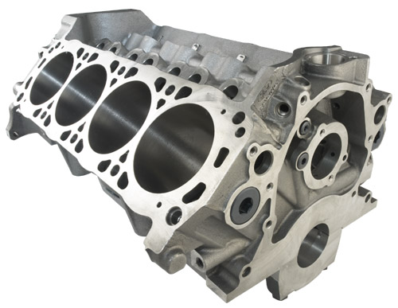
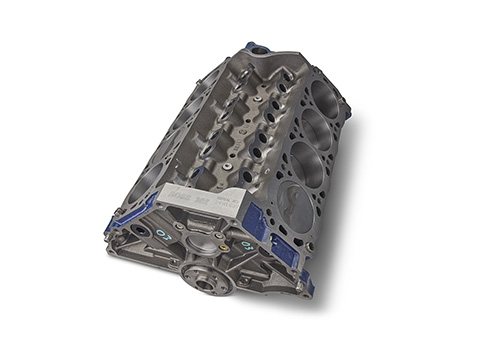

1. Projektdaten
Build-Ziele & Leistungsschätzung
Die Kombination aus Ford Performance M-6009-302 Short Block (komplett geschmiedet), AFR 1399 165cc CNC-Köpfen (mit Spring/Retainer-Upgrade) und COMP Cams XE274HR Hydraulic Roller Nockenwelle ergibt einen zuverlässigen Street/Strip-Motor mit folgenden Eigenschaften:
- Breites Drehmomentband – dank 165cc-Köpfen (hohe Port-Geschwindigkeit bei kleinem Hubraum)
- Solide Dauerhaltbarkeit – alle geschmiedeten Internals, keine übertriebene Verdichtung
- Hydraulisch – wartungsfrei – kein Ventilspiel-Einstellen nötig (Morel HLT für Präzision bei hohen Drehzahlen)
- Drehzahlfest bis ~6.500 U/min – dank AFR 8605 Springs (.650" Lift) + Titanium Retainer + HLT Lifter
Werte anpassen – CR berechnet sich automatisch. Werte werden gespeichert.
-- : 1
Jede Komponente hat ein eigenes Drehzahl-Limit. Die niedrigste Grenze bestimmt die maximale Drehzahl des Motors.
| Komponente | Max. RPM | Begründung |
|---|---|---|
| COMP Cams XE274HR | 6.200 | COMP Cams empf. Betriebsbereich 2.200–6.200 |
| Morel 5327 HLT Lifter | 6.500–7.000+ | HLT (Limited Travel) für High-RPM ausgelegt |
| AFR 8605 Ventilfedern | 7.000 | AFR Upgrade-Feder, .650" Lift / 7.000 RPM |
| AFR 8600 Ti-Retainer | 7.000+ | Titan = leichter als Stahl, reduziert Ventiltrieb-Trägheit |
| COMP 1632-16 Roller Rockers | 7.000+ | 8650 Chromoly, Nadellager, Ultra Pro Magnum |
| BOSS302 Block (4-Bolt) | 7.500+ | Race-Block, 4-Bolt Mains auf Pos. 2/3/4 |
| Geschmiedete Internals | 7.500+ | Kurbel, Pleuel, Kolben – alle geschmiedet |
| MSD 6AL Rev Limiter | einstellbar | 2.000–11.000 RPM in 100er-Schritten |
Empf. Rev-Limiter-Einstellung: 6.500 RPM (Sicherheitsmarge für Ventiltrieb)
| Komponente | Einfluss | Tendenz |
|---|---|---|
| DellOrto DRLA 45 (4x Downdraft) | Direktes Ansprechverhalten | Einzeldrosselklappen → sofortige Response |
| Bundle of Snakes (TSC GT40) | +15–30 BHP vs. Gusskrümmer | Platzoptimiert für GT40-Chassis |
| Zündung (MSD 6AL) | Kapazitiv → stärkerer Funke | Advance-Kurve abstimmen für max. Leistung |
| Zündzeitpunkt | Leistung + Detonation | 32–36° total (je nach CR + Benzin) |
| Verdichtung | Effizienz + Drehmoment | 9.5–10.0:1 ideal für Super Plus (98 ROZ) |
1c. Motor-Simulator & Kraftstoffempfehlung
Alle Leistungs- und Drehmoment-Angaben in diesem Build-Log verwenden die in der US-Motorentechnik üblichen imperialen Einheiten. Die Umrechnung in metrische Einheiten wird wo möglich mit angegeben.
| Einheit | Bezeichnung | Definition / Verwendung | Umrechnung |
|---|---|---|---|
| BHP | Brake Horsepower | Dieses Dokument. Nutzleistung an der Kurbelwelle, ohne Nebenaggregat-Verluste. Ford Perf. Katalog-Standard (SAE J607). | 1 BHP = Basis |
| PS (DIN) | Pferdestärke | DIN 66036. Metrische Pferdestärke. In DE/EU gebräuchlich. | 1 BHP = 1.0139 PS |
| kW | Kilowatt | SI-Einheit. EU-Fahrzeugpapiere, offizielle Angaben. | 1 BHP = 0.7457 kW |
| WHP | Wheel Horsepower | Radleistung, nach Getriebe-/Antriebsverlusten (~12–18% weniger als BHP). | ~0.82–0.88 × BHP |
| Einheit | Bezeichnung | Umrechnung |
|---|---|---|
| ft-lbs | Foot-Pounds (lb-ft). Dieses Dokument (US-Standard für Motordrehmoment). | 1 ft-lb = 1.3558 Nm |
| Nm | Newtonmeter. SI-Einheit, in EU/DE gebräuchlich. | 1 Nm = 0.7376 ft-lbs |
| Einheit | Verwendung | Umrechnung |
|---|---|---|
| ft-lbs | Dieses Dokument (US-Hersteller-Specs). | 1 ft-lb = 1.3558 Nm |
| in-lbs | Für kleine Schrauben (1/12 ft-lb). Teils in US-Specs. | 1 in-lb = 0.1130 Nm |
| Einheit | Verwendung | Umrechnung |
|---|---|---|
| psi | Öldruck, Kraftstoffdruck (US-Standard). | 1 psi = 0.0689 Bar |
| Bar | Metrisch (DE/EU). | 1 Bar = 14.504 psi |
| PSI (Zugfestigkeit) | Materialfestigkeit (z.B. ARP 200.000 PSI). | 1.000 PSI = 6.895 MPa |
| Einheit | Verwendung | Umrechnung |
|---|---|---|
| Inch (") | Bohrung, Hub, Spaltmaße, Schrauben. | 1" = 25.4 mm |
| thou (mil) | 0.001" = ein Tausendstel Inch. Lagerspiel, Dichtungsdicke. | 1 thou = 0.0254 mm |
| ci / CID | Cubic Inches – Hubraum (US). | 1 ci = 16.387 cc (ml) |
| cc | Kubikzentimeter – Brennraumvolumen, Kanalvolumen. | 1 cc = 1 ml |
| CFM | Cubic Feet per Minute – Luftdurchsatz Zylinderkopf. | 1 CFM = 1.699 m³/h |
| Einheit | Verwendung | Umrechnung |
|---|---|---|
| lbs | US-Pfund. Bauteil-/Motorgewicht. | 1 lb = 0.4536 kg |
| kg | Kilogramm (SI). Fahrzeuggewicht. | 1 kg = 2.2046 lbs |
Simulator starten um Empfehlung zu erhalten...
Die drei Größen hängen untrennbar zusammen:
Zündzeitpunkt = einstellbar (Initial + Centrifugal + Vacuum Advance)
Oktanzahl = bestimmt sich aus CR + Timing
Je früher die Zündung erfolgt (mehr Advance), desto höher steigt der Spitzendruck im Brennraum. Hoher Spitzendruck bei hoher Verdichtung führt zu Klopfen (Detonation) – einer unkontrollierten Selbstzündung des Restgemischs. Höhere Oktanzahl = höhere Klopffestigkeit = mehr Timing möglich.
1. Verdichtung messen/berechnen (CR-Rechner oben) → ca. 9.7–9.8:1
2. Verfügbaren Kraftstoff bestimmen (in DE: Super Plus 98 ROZ ideal)
3. Timing so einstellen, dass bei Volllast kein Klopfen auftritt
4. Total Timing ergibt sich aus dem Zusammenspiel von CR + Kraftstoff
| CR | Max. Timing mit 95 ROZ | Max. Timing mit 98 ROZ | Max. Timing mit 100+ ROZ |
|---|---|---|---|
| 9.0:1 | 36–38° | 38–40° | 40–42° |
| 9.5–9.8:1 | 32–34° | 34–36° | 36–38° |
| 10.0:1 | 30–32° | 32–34° | 34–36° |
| 10.5:1+ | Kritisch! | 28–32° | 32–34° |
Der Vacuum Advance (MSD 8479) addiert bei Teillast zusätzliches Timing (bis ~15° extra). Dies ist kein Klopfrisiko, da Teillast = weniger Brennraumdruck. Vacuum Advance verbessert den Verbrauch und die Gasannahme im Stadtverkehr erheblich, ohne die Klopfgrenze zu beeinflussen. Bei Volllast (WOT) ist kein Unterdruck vorhanden → Vacuum Advance = 0°.
E10 (10% Ethanol) darf NICHT getankt werden! Ethanol greift die Aluminium-Vergaserkörper der DellOrto DRLA 45 an:
• Quellung von Dichtungen, Membranen und Schwimmernadel-Ventilen
• Hygroskopisch: Ethanol bindet Wasser → Korrosion bei Standzeiten
• Lackschäden: Ethanol greift Lackoberflächen an (Spritzer beim Tanken!)
• Phasentrennung: Bei Standzeiten trennt sich Ethanol/Wasser vom Benzin → Motorschäden
| Tankkette | Produkt | ROZ | Ethanol | Empfehlung |
|---|---|---|---|---|
| Aral | Ultimate 102 | 102 | 0% | ★ BESTE WAHL |
| Shell | V-Power Racing | 100 | max 0,7% | ★ SEHR GUT |
| TotalEnergies | Excellium Super Plus | 98 | E5 (max 5%) | OK |
| Esso | Synergy Supreme+ Super Plus | 98 | E5 (max 5%) | OK |
| JET | Super Plus | 98 | E5 | OK (nicht überall) |
| Alle | Super E5 | 95 | E5 (max 5%) | Notfall |
| 95 | E10 (10%) | ❌ VERBOTEN |
| Tankkette | Produkt | ROZ | Ethanol | Empfehlung |
|---|---|---|---|---|
| MOL | EVO 100 / Master 100 | 100–101 | 0% (ETBE statt Ethanol) | ★ BESTE WAHL |
| Shell | V-Power | 100 | E5 | Sehr gut |
| OMV | MaxxMotion 100 | 100 | E5 | Sehr gut |
| MOL / Andere | Szüper 98 | 98 | E5 | OK |
| 95 | E10 | ❌ VERBOTEN |
| Tankkette | Produkt | ROZ | Ethanol | Empfehlung |
|---|---|---|---|---|
| MOL | EVO 100 | 100 | 0% (ETBE) | ★ BESTE WAHL |
| Shell | V-Power | 100 | E5 | Sehr gut |
| OMV | MaxxMotion 100 | 100 | E5 | Sehr gut |
| Alle | Natural 98 | 98 | E5 | OK |
| 95 | E10 | ❌ VERBOTEN |
| Tankkette | Produkt | ROZ | Ethanol | Empfehlung |
|---|---|---|---|---|
| Shell | V-Power Racing | 100 | E5 | ★ BESTE WAHL |
| MOL / Benzina | Verva 100 | 100 | E5 | Sehr gut |
| OMV | MaxxMotion 100 | 100 | E5 | Sehr gut |
| Alle | Natural 98 | 98 | E5 | OK |
| 95 | E10 | ❌ VERBOTEN |
| Tankkette | Produkt | ROZ | Ethanol | Empfehlung |
|---|---|---|---|---|
| TotalEnergies (am Circuit!) | Excellium SPA 102 | 102+ | E5 | ★ EXKLUSIV am Circuit! |
| Shell | V-Power Racing | 100 | E5 | Sehr gut |
| TotalEnergies | Excellium Super Plus | 98 | E5 | OK |
| Alle | SP98 (Super Plus) | 98 | E5 | OK |
| 95 | E10 | ❌ VERBOTEN |
| Tankkette | Produkt | ROZ | Ethanol | Empfehlung |
|---|---|---|---|---|
| OMV | MaxxMotion 100+ | 100 | E5 | ★ BESTE WAHL |
| Shell | V-Power Racing | 100 | E5 | Sehr gut |
| Alle | Super Plus | 98 | E5 | OK |
| Strecke | Tanken bei | Produkt | ROZ |
|---|---|---|---|
| Pannoniaring | MOL | EVO 100 (ethanol-frei!) | 100 |
| Slovakiaring | MOL / OMV | EVO 100 oder MaxxMotion 100 | 100 |
| Brno | Shell / MOL-Benzina | V-Power Racing / Verva 100 | 100 |
| Spa | TotalEnergies am Circuit | Excellium SPA 102 | 102+ |
Build Log – Progress Dashboard
2. Block & Kurbeltrieb


3. Kolben & Pleuel
4. Zylinderköpfe, Quench & Ventilfreiraum
| Zyl. | Kolbenunterstand (A) | Dichtungsdicke (B) | Quench (A+B) | P-t-V Einlass (≥0.080") |
P-t-V Auslass (≥0.100") |
|---|
5. Ventiltrieb (Valvetrain)
6. Ansaugspinne (Intake Manifold)
7. Zündkerzen (Spark Plugs)
8. Ölsystem (Oiling System)
9. Timing Cover & Harmonic Balancer
10. Wasserpumpe (Water Pump)
11. Vergaser & Kraftstoffsystem (Carburetor)
12. Zündanlage (MSD Ignition)
Die Advance-Kurve bestimmt, wie schnell der Zündzeitpunkt von Initial auf Total steigt. Langsame Kurve = weniger Klopfneigung. MSD liefert 2x Heavy Silver (langsamste Kurve). Kombinationen:
| Kombination | Federn | Kurve |
|---|---|---|
| A (Werks) | 2× Heavy Silver | Langsamste |
| B | 1× Heavy Silver + 1× Light Blue | Mittel-langsam |
| C | 1× Heavy Silver + 1× Light Silver | Mittel |
| D | 2× Light Blue | Mittel-schnell |
| E | 1× Light Silver + 1× Light Blue | Schnell |
| F | 2× Light Silver | Schnellste |
Advance Stop Bushings begrenzen den mechanischen Verstellwinkel:
| Bushing-Farbe | Mech. Advance | Bei 12° Initial = Total |
|---|---|---|
| Silber (Werks) | 21° | 33° |
| Blau | 25° | 37° |
| Schwarz (kein) | 28° | 40° |
12b. Anlasser (Starter Motor)
12c. Nebenaggregate (Accessory Drive)
13. Kupplung & Antrieb (Clutch)
14. Antriebsstrang (Drivetrain)
| Gang | 1. | 2. | 3. | 4. | 5. | R |
|---|---|---|---|---|---|---|
| Ratio | 3.36 | 2.05 | 1.38 | 1.03 | 0.82 | 3.54 |
15. Ford Performance Installationshinweise
| Ford Performance Vorgabe | Unser Build | Status |
|---|---|---|
| Priming vor Erststart – Pflicht! | Melling PT11 Priming Tool + Anleitung | ✔ |
| Ölwanne min. 7 qt Kapazität | Wanne noch zu spezifizieren | ⚠ Prüfen |
| 4-Richtungen-Schwallbleche (Road Race) | Wanne mit Baffles wählen | ⚠ Prüfen |
| Windage Tray | Empfohlen, für Track Pflicht | ⚠ Bestellen |
| Pickup-Abstand .250"–.375" vom Boden | Messfeld vorhanden, Anleitung vorhanden | ✔ |
| Pickup-Sieb: Wire Mesh, nicht perforiertes Blech | Hinweis eingearbeitet | ✔ |
| Ölkühler: Ausreichend dimensioniert, keine Restriktionen | Kostenneutral (vorhanden) | ✔ |
| Ölleitungen: Ausreichend groß, wenig Bögen | Prüfen bei Montage | ⚠ Prüfen |
| Nie gebrauchten Ölkühler wiederverwenden! | – | ⚠ Prüfen |
| Durchflussrichtung beachten (One-Way-Systeme) | Bei Montage prüfen | ⚠ Prüfen |
| Ford Performance Vorgabe | Unser Build | Status |
|---|---|---|
| Total Timing 5.0L (302): 36–38° | Empf. 32–36° (9.8:1 CR, konservativer) | ✔ |
| Vacuum Advance an Ported Vacuum (nicht Manifold!) | MSD 8479 + Ported Vacuum dokumentiert | ✔ |
| Zündkabel-Routing: Inductive Crossfire vermeiden | Dokumentiert (s.u.) | ✔ |
| Verteilerzahnrad: Material passend zur Nockenwelle | MSD 8479: Iron Gear für Hyd. Roller ✔ | ✔ |
| Falsche Höhe des Verteilerzahnrads vermeiden | MSD Werks-Einstellung, nicht verändert | ✔ |
COMP XE274HR = Teilenr. 35-518-8. Der „35“-Prefix bedeutet 351W/HO-Zuendfolge:
1 – 3 – 7 – 2 – 6 – 5 – 4 – 8
NICHT die Standard-302-Folge (1-5-4-2-6-3-7-8)!
Quelle: COMP Cams – Cams mit Prefix „31“ = Standard 302, Prefix „35“ = 351W/HO.
Verteilerkappe + Zündkabel müssen entsprechend verdrahtet werden.
Zylinderanordnung (Blick von vorne):
Beifahrerseite (RH): 1-2-3-4 | Fahrerseite (LH): 5-6-7-8
Verteiler dreht gegen den Uhrzeigersinn (CCW).
| Ford Performance Vorgabe | Unser Build | Status |
|---|---|---|
| Kraftstoffdruck bei Peak HP aufrechterhalten | 2x Facet Red Top + Druckregler | ✔ |
| Kraftstoffdruck Dell’Orto DHLA 45: 2.5–3.5 psi (0.17–0.24 bar) Facet Red Top liefert 7.5 psi → Druckregler PFLICHT (z.B. Malpassi Filter King) | Druckregler dokumentiert | ✔ |
| Pumpe schwerkraftgespeist montieren (nicht saugend) | Facet: vertikal, tanknahe, Auslass oben | ✔ |
| Kraftstoff durch Filter drücken, nicht saugen | Filter nach Pumpe, vor Druckregler | ✔ |
| BSFC ~0.5 lb/HP für Dimensionierung | 2x Facet = ~120 l/h total, ausreichend | ✔ |
| Tankbaffles vorhanden? | Prüfen (je 1 Pumpe pro Tank) | ⚠ Prüfen |
| Höhenlage, Temperatur & Kraftstoff beeinflussen Bedüsung | DellOrto: Jetting nach Streckenhöhe | ⚠ Tuning |
| Ford Performance Vorgabe | Unser Build | Status |
|---|---|---|
| Höhere Leistung = mehr Kühlkapazität | Milodon 16230 High-Volume Wasserpumpe | ✔ |
| Befüllpunkt = höchster Punkt! Sonst Lufttaschen → Hot Spots → Motorschaden | GT40: Prüfen! Kühler oft tief | ❌ Prüfen |
| Riemenscheiben: Richtige Größe (Underdrive = zu wenig Durchfluss) | Serien-Ratio oder leichtes Overdrive | ⚠ Prüfen |
| Kühlerfläche ausreichend für Motorleistung | Kühler-Dimensionierung prüfen | ⚠ Prüfen |
| Lüfter + Shroud: Luftdurchsatz ausreichend | Shroud erhöht Effektivität massiv | ⚠ Prüfen |
| Kühler-Position: Luftstrom bei verschiedenen Geschwindigkeiten | GT40: Heck-Kühler, Luftführung prüfen | ⚠ Prüfen |
| Ford Performance Vorgabe | Unser Build | Status |
|---|---|---|
| Schwungrad muss zum Balance Factor passen! | M-6009-302 = Zero Balance → Zero-Balance Schwungrad Pflicht | ✔ Dokumentiert |
| Falsche Getriebewellenlänge kann Kurbelwelle nach vorn drücken → Axiallager-Schaden | UN1-13 Adapter prüfen | ⚠ Prüfen |
| Axiallager-Schaden passiert in Sekunden! | Axialspiel messen (Messfeld vorhanden) | ✔ |
Diese Warnungen sind als kontextuelle Hinweise in den jeweiligen Build-Log-Schritten eingearbeitet:
| Ford Performance Vorgabe | Build-Log Schritt | Status |
|---|---|---|
| Keine Fremdteile in den Ansaugtrakt! | Phase 3, Step 1 | ✔ |
| Ansaugbrücke max. 18 ft-lbs (24 Nm)! | Phase 3, Step 22 | ✔ |
| Verteiler-Zahnrad: Iron für Hyd. Roller | Phase 3, Step 23 | ✔ |
| Schwungrad: Zero-Balance Pflicht! | Phase 4, Step 9 | ✔ |
| Getriebewelle darf KW nicht nach vorn drücken! | Phase 4, Step 10 | ✔ |
Ford Performance gibt Leistungswerte ihrer Pushrod Crate Engines nach SAE J607 („Racer Corrected“) an – korrigiert auf 60°F (15,6°C) und 29.92" Hg. Diese Werte sind ca. 4% höher als SAE J1349 („SAE“), welche auf 77°F (25°C) und 29.31" Hg korrigiert und 85% mechanischen Wirkungsgrad berücksichtigt.
| Korrekturfaktor | Temperatur | Druck | Ergebnis |
|---|---|---|---|
| SAE J607 (Racer Corrected) | 60°F (15,6°C) | 29.92" Hg | Höhere Werte (~4% mehr) |
| SAE J1349 (SAE Standard) | 77°F (25°C) | 29.31" Hg | Realistischere Werte |
16. Streckenanalyse & Fahrzeugeinschätzung
| Aspekt | Bewertung |
|---|---|
| V-max auf Geraden | ~220–235 km/h (4. Gang, kurz 5.) |
| Vorherrschende Gänge | 2.–4. Gang (kurvenreich) |
| Bremsbelastung | Mittel – viele Brems-/Beschleunigungszyklen |
| Motoranforderung | Gute Gasannahme, Drehmoment aus Teillast (DellOrto-Stärke) |
| Reifen | Crossply erträglich – kein extremes Tempo in Kurven |
| Kühlung | Unkritisch – flach, kurze Volllast-Phasen |
| Aspekt | Bewertung |
|---|---|
| V-max auf Geraden | ~240–260 km/h (5. Gang auf 900m-Gerade) |
| Vorherrschende Gänge | 3.–5. Gang (schneller Charakter) |
| Bremsbelastung | Hoch – harte Verzögerung aus Hochgeschwindigkeit |
| Motoranforderung | Volle Leistung gefragt, lange Vollgasphasen |
| Reifen | Kritisch! Kuppen bei Hochgeschwindigkeit destabilisieren Crossply-Reifen |
| Kühlung | Erhöht – lange Volllast, Öltemperatur überwachen |
| Aspekt | Bewertung |
|---|---|
| V-max auf Geraden | ~210–230 km/h (4. Gang, Gerade bergauf begrenzt) |
| Vorherrschende Gänge | 2.–4. Gang (ständiger Wechsel wg. Höhenprofil) |
| Bremsbelastung | Sehr hoch! Lange Gefällstrecken + harte Verzögerung |
| Motoranforderung | Drehmoment bergauf entscheidend – 302 mit XE274HR ideal |
| Reifen | Herausfordernd! Gewichtsverlagerung bergab/bergauf + Crossply = spürbares Eigenlenkverhalten |
| Kühlung | Kritisch! Bremstemperatur + Motoröl bergauf unter Volllast |
| Aspekt | Bewertung |
|---|---|
| V-max Kemmel Straight | ~245–260 km/h (5. Gang, GT-Niveau ~280 km/h möglich) |
| Vorherrschende Gänge | Alle 5 Gänge – La Source (2.) bis Kemmel (5.) |
| Eau Rouge/Raidillon | Schlüssel! Voller Commitment nötig. 17% bergauf, Kompression am Fuß. Crossply verlieren hier Grip durch Gewichtsverlagerung. |
| Bremsbelastung | Extrem – Les Combes nach Kemmel, Bus Stop Chicane |
| Reifen | Größte Herausforderung! Blanchimont bei ~220 km/h mit Crossply = volles Vertrauen nötig |
| Wetter | Es kann in einem Streckenteil regnen und im anderen trocken sein (Mikroklima Ardennen) |
| Strecke | Länge | Kurven | Höhe Δ | V-max | Schwierigkeit |
|---|---|---|---|---|---|
| Pannoniaring | 4.740 m | 18 | gering | ~230 | ★★☆☆☆ |
| Slovakiaring | 5.922 m | 14–16 | Kuppen | ~255 | ★★★☆☆ |
| Brno | 5.403 m | 14 | 73,75 m | ~225 | ★★★★☆ |
| Spa | 7.004 m | 19 | 102 m | ~255 | ★★★★★ |
2. Slovakiaring → Hochgeschwindigkeits-Erfahrung, Bremsen unter Last
3. Brno → Höhenprofil-Erfahrung, Setup-Feintuning, Bremsmanagement
4. Spa → Königsdisziplin, alle Systeme bewährt
Bremsen: Ohne ABS muss der Bremsdruck dosiert werden. Brake Fading bei Gefällstrecken (Brno, Spa) vorbeugen: hochwertige Bremsbeläge, Bremskühlung, Bremsflüssigkeit DOT 5.1 oder Racing.
Ölversorgung: Hohe Querbeschleunigung in langen Kurven kann Öldruck-Schwankungen verursachen. Windage Tray und Ölstandskontrolle vor jeder Session.
Getriebeöl: UN1-13 wird heiß – Getriebeölkühler vor Spa unbedingt installieren.
17. Teilekatalog & Kostenübersicht
| Teilenummer | Beschreibung | Preis (USD) |
|---|---|---|
| M-6009-302 | Ford Perf. 302 BOSS Short Block (geschm. Internals, Zero Bal.) | $5.200,00 |
| Teilenr. | Beschreibung | Preis |
|---|---|---|
| AFR-1399 | AFR 165cc Renegade Heads, 58cc, Spring Upgrade #8605 | $2.432,59 |
| CCA-35-518-8 | COMP Cams XE274HR Xtreme Energy Hyd. Roller Cam | $549,95 |
| MRL-5327 | Morel 5327 HLT Hydraulic Roller Lifters | $710,95 |
| CCA-1632-16 | COMP Ultra Pro Magnum Roller Rockers 1.6:1 | $476,95 |
| ARP-154-4003 | ARP 1/2-13 Head Studs, 8740 Chromoly, 200k PSI | $148,07 |
| CCA-4600-16 | COMP Polylock Adjusting Nuts 7/16" (16 St.) | $65,95 |
| CNC-TC6878 | CNC Motorsports Checking Pushrod 6.800"–7.800" | $29,95 |
| Teilenr. | Beschreibung | Preis |
|---|---|---|
| M-6051-CP331 | Ford Perf. Kopfdichtung (0.040", 9.0cc, 4.160") | $172,99 |
| M-6600-D2 | Ford Perf. High Volume Ölpumpe | $63,99 |
| M-6605-B302 | Ford Perf. Ölpumpen-Antriebswelle (Chromoly) | $39,99 |
| M-6268-A302 | Ford Perf. Double Roller Timing Chain Set | $193,99 |
| M-6316-D302 | Ford Perf. Harmonic Balancer (SFI, Neutral Bal.) | $400,99 |
| M-6397-A302 | Ford Perf. Kupplungs-Schrauben & Dowel Kit | $23,99 |
| ARP 254-1001 | ARP Cam Bolt (12-Point, Chromoly) | $3,99 |
| FEL-1250 | Fel-Pro 1250 Intake Manifold Gasket Set | $35,99 |
| MIL-16230 | Milodon High Volume Aluminium Wasserpumpe | $146,95 |
| Teilenr. | Beschreibung | Preis |
|---|---|---|
| TFS-90000-16 | Trick Flow Cam Degree Kit (komplett) | $123,99 |
| PRO-66838 | Proform Cam Checker Tool | $99,99 |
| MOR-62191 | Moroso Pro Degree Wheel | $89,11 |
| CCA-4798 | COMP Cams Crankshaft Socket | $59,95 |
| SUM-900061-S | Summit Racing Dial Indicator Stand | $44,99 |
| PRO-66781 | Proform Valve Lash Adjusting Wrench | $31,99 |
| MEL-PT11 | Melling Engine Priming Tool | $25,99 |
| CLE-MPG1 | Clevite Plastigage Grün (0.001"–0.003") | $2,99 |
| CLE-MPR1 | Clevite Plastigage Rot (0.002"–0.006") | $3,99 |
| Komponente | Beschreibung | Preis |
|---|---|---|
| DellOrto DRLA 45 | 4x Downdraft-Vergaser + Ansaugbrücke | $0 (vorhanden) |
| MSD Zündanlage | 6AL Box, Verteiler, Spule, Cap/Rotor, Advance Kit | $0 (vorhanden) |
| Ölkühler + Leitungen | Ölkühler, AN-Leitungen, Fittinge | $0 (vorhanden) |
| Fittinge & Adapter | Diverse AN-Fittinge, Adapter | $0 (vorhanden) |
| Short Block (MSRP Ford Performance) | $5.200,00 |
| Koepfe & Ventiltrieb (CNC Motorsports) | $4.414,41 |
| Motorkomponenten (Summit Racing) | $1.082,88 |
| Werkzeuge (Summit Racing) | $483,00 |
| Kostenneutral (Vergaser, MSD, Ölkühler, Fittinge) | $0,00 |
| GESAMT | $11.180,29 |
| Ohne: Versandkosten, Zölle/Einfuhrumsatzsteuer, Pushrods (noch zu bestellen) | |